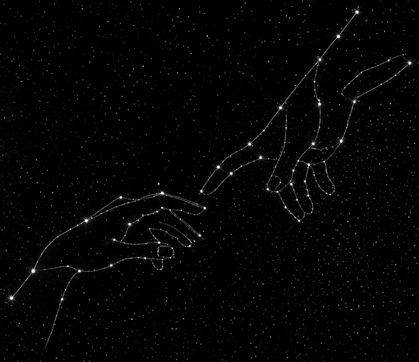

Aiuto founder e business digitali a validare idee, misurare ciò che conta e scalare ciò che funziona.
Lavoro con founder e team digitali su tre leve:
infrastruttura dati, validazione rapida e scaling.
Progetto sistemi per testare velocemente, misurare ciò che conta e far crescere solo ciò che funziona.
Ogni decisione parte dai dati e si misura su KPI chiari, definiti insieme.
Costruisco infrastrutture di tracking per definire KPI, conoscere il target, e misurare il comportamento degli utenti. Questo ci aiuterà a misurare con precisione le campagne di validazione della fase 2. Senza dati affidabili, ogni decisione è un salto nel buio.
Una volta pronta l'architettura dei dati, attivo campagne ADV mirate a basso budget per testare rapidamente le idee e misurare l'interesse reale.
Validato ciò che funziona, si scala. A questo punto avremo identificato le leve di crescita e costruito campagne ADV sostenibili e ottimizzate. Il mio focus diventa il tuo ROAS.
Ogni collaborazione segue un processo strutturato: diagnostico i problemi, sistemo l'architettura dei dati e ricostruisco infrastrutture pubblicitarie pronte per validare e/o scalare.
Analisi del business, dei dati esistenti (quando ci sono) e degli obiettivi. Diagnostico i problemi, li documento e li correggo.
Implemento l'infrastruttura dati per lanciare campagne ADV pronte a validare ed a scalare.
Lancio esperimenti rapidi e a basso budget per validare ipotesi prima di scalare.
Identifico le leve che funzionano e costruisco il sistema per scalarle in modo efficiente.
20 minuti gratuiti per capire dove sei, dove vuoi arrivare e se posso aiutarti. Nessun impegno.